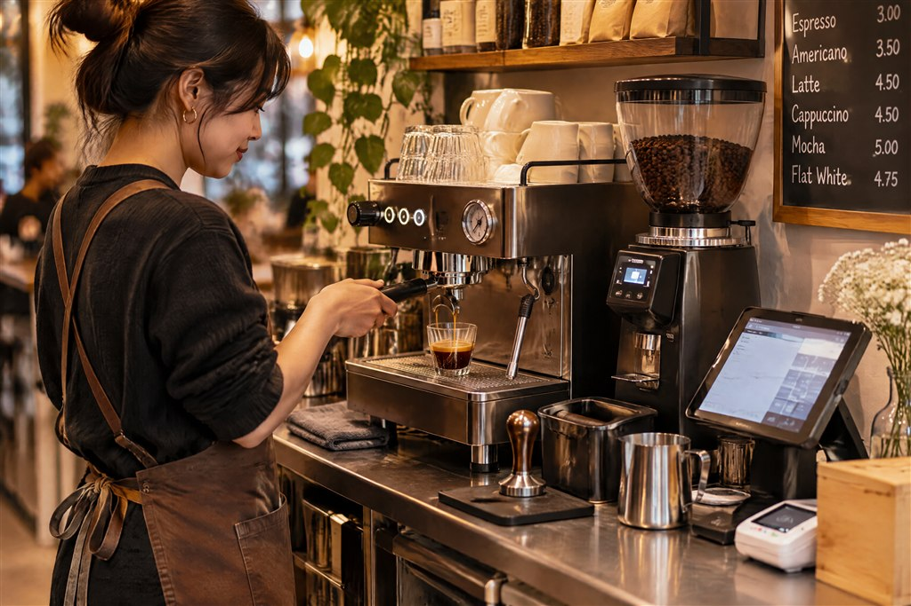
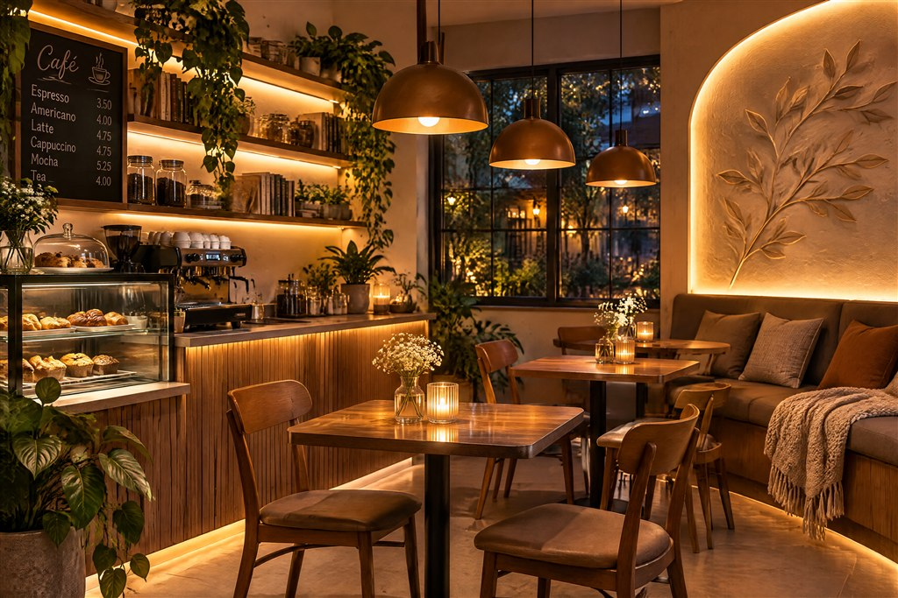
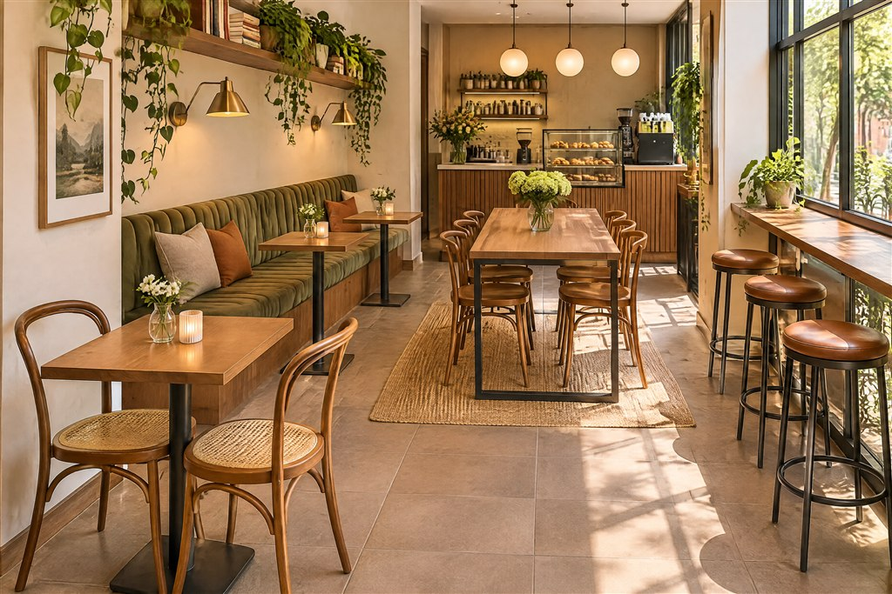

Opening a small café on a limited budget does not mean compromising on the customer experience. In fact, compact cafés often benefit more from good planning than expensive finishes. When every square foot has to accommodate a counter, equipment, seating, storage, customer circulation and service movement, the smartest investment is usually getting the layout and operations right before spending on decoration.
A small café does not need to look expensive. It needs to feel considered, comfortable, efficient and memorable.
Key takeaways
- Spend first on layout, counter workflow, equipment and lighting, not decoration.
- A smaller material palette – one timber tone, one neutral, one brand colour, one metal finish – reads as more resolved than many different finishes.
- Flexible seating (two-seaters that combine, banquettes, a communal table) beats maximising cover count.
- Freeze layout, equipment and MEP before construction starts. Late changes are the most expensive mistake in a small café.
- SprintCo's published planning range: ₹800–₹1,200/sq ft budget, ₹1,500–₹2,500/sq ft mid-range, ₹2,800–₹5,000+/sq ft premium.
Quick Answer: How Do You Design a Small Café on a Tight Budget?
The best way to design a small café on a limited budget is to spend first on the elements that affect daily operations and customer experience: space planning, counter workflow, kitchen and equipment requirements, lighting, durable furniture and easy-to-maintain materials.
Keep the material palette simple, avoid unnecessary construction, finalise services before execution and use one or two strong brand elements rather than decorating every surface. The objective is not to make everything cheaper. It is to make every design decision earn its cost.
Start With the Café Business Model, Not the Décor
Before selecting tiles, furniture or paint colours, define how the café will operate. A 400 sq ft takeaway coffee shop should not be planned like an 800 sq ft neighbourhood café where customers may sit for an hour. Start by understanding:
- What percentage of business will be dine-in versus takeaway?
- Will the café serve only beverages and light food, or require a working kitchen?
- How many people are expected during peak hours?
- Will customers work from the café?
- Will delivery riders require a separate pickup point?
- How much equipment, refrigeration and storage will the menu require?
These decisions determine where your money should go. A beautiful café with the wrong operational model becomes expensive very quickly.
Make Every Square Foot Work Harder
In a compact café, the floor plan is one of the biggest budget decisions. Before finalising furniture, map the journey of both customers and staff.
A typical customer journey may be: Entrance → Menu → Order → Payment → Pickup → Seating / Exit. At the same time, staff may need to move between: Storage → Preparation → Coffee Machine → Food Display → Pickup → Washing.
When these paths interfere with each other, the café requires more staff movement, queues become uncomfortable and valuable floor area gets wasted. A practical layout can often save more money than choosing a cheaper finish, because it reduces changes later and improves how the café operates every day.
Get the Counter Right Before Spending on Decoration
For many small cafés, the counter is the most important piece of furniture in the space. It is simultaneously an ordering point, workstation, equipment zone, storage unit, product display and brand feature.
Before designing its appearance, finalise what needs to happen behind it — espresso machine and grinders, refrigeration, food display, POS, water supply, drainage, electrical points, waste, storage and the pickup area. Changing these requirements after fabrication has started can be much more expensive than resolving them during design.
If the budget is tight, make the counter work hard functionally first — then use its visible front as one of the café's main design statements.

Spend More on What Customers Actually Experience
Not every wall needs an expensive finish. Customers are more likely to notice the entrance, counter, seating comfort, lighting, cleanliness, product presentation and overall atmosphere.
For a limited-budget café, concentrate design investment in a few high-impact zones. A strong counter, distinctive signage and well-designed lighting can give the café far more identity than applying an expensive finish across every wall. Think of the café in terms of hero moments and supporting surfaces: let a few elements carry the visual identity, and keep the rest simple.
Choose Commercial Materials, Not Just Cheap Materials
The lowest-priced material is not necessarily the most economical choice for a café. Commercial interiors experience constant movement, cleaning, spills and wear. Choose materials that are durable, cleanable, repairable and easy to replace — practical options may include commercial laminates, powder-coated metal, engineered surfaces, tiles and commercial-grade upholstery.
A finish that costs slightly more initially but survives daily F&B use may provide better value than something that requires frequent repairs or replacement. Budget design should consider lifecycle cost, not just purchase cost.
Keep the Material Palette Small
Using fewer materials is one of the easiest ways to make a small café feel more resolved. Instead of introducing a different finish on every wall, create a controlled palette — for example, one timber tone, one neutral base, one brand colour and one metal finish can be enough to create a complete visual language.
A smaller material palette can also simplify procurement, reduce wastage and make future repairs easier. Brand personality can then come through graphics, menu boards, packaging, lighting, furniture details or one memorable architectural feature.
Use Lighting Strategically
Lighting can change how inexpensive materials are perceived. Instead of relying only on bright general ceiling lighting, consider layers such as functional lighting at the counter, pendant or focused lighting above tables, wall lighting, concealed lighting and feature lighting around signage or display.
The colour temperature and intensity should suit the café format. A neighbourhood café may benefit from a warmer atmosphere, while a high-volume grab-and-go outlet may need a brighter, more energetic environment. Natural light should also be used wherever possible. The goal is not to install more lights. It is to put the right light in the right place.

Use Flexible Seating Instead of Filling the Floor With Furniture
A compact café needs seating that can respond to different group sizes. Instead of using only four-seater tables, consider a mixture of two-seaters, movable tables, banquettes, window seating, communal tables or counter seating.
Two smaller tables that can be combined when required are often more flexible than one large fixed table. Built-in banquettes can also use perimeter space efficiently and may incorporate storage where appropriate. But do not maximise seating simply because the floor plan allows it — the objective should be optimum seating, not maximum seating. Customers and staff still need to move comfortably.

Do Not Forget Storage
Storage is one of the first things sacrificed in small cafés, and one of the first things operators miss after opening. Plan space for packaging, coffee supplies, cleaning materials, crockery, takeaway containers, dry ingredients and staff items.
Where appropriate, storage can be integrated below counters, inside banquettes or into full-height joinery. Good storage keeps operational clutter away from customer-facing areas and reduces the need for expensive changes after opening.
Coordinate MEP Before Construction Starts
One late electrical or plumbing change can cost more than several decorative decisions combined. Before execution begins, coordinate the café's electrical load, equipment points, water supply, drainage, HVAC, exhaust requirements and lighting.
This becomes especially important when espresso machines, refrigeration, ovens or other commercial equipment are involved. Equipment dimensions and technical requirements should be frozen as early as possible — designing the counter first and selecting equipment later is usually the wrong sequence. For more on getting this right, see our guide to commercial kitchen layout planning.
Use Modular and Repeatable Elements Where They Make Sense
Customisation is useful when it creates brand identity. It becomes expensive when everything is custom. A budget-conscious café can use repeatable dimensions for tables, storage, shelving, service counters, wall panels and display systems.
This is particularly valuable for café brands planning future outlets. Design the pieces that customers remember. Standardise the pieces they do not. That can make future manufacturing, replacement and rollout significantly easier.
Avoid Design Changes During Construction
One of the easiest ways to lose control of a café budget is to make major decisions after work has already started. Before construction, freeze as much as possible: layout, kitchen equipment, counter configuration, electrical requirements, plumbing, materials, furniture, lighting and signage.
Late changes often affect more than one trade. Moving a piece of equipment may require changes to electrical points, drainage, joinery and even the counter. Good planning does not eliminate every site issue, but it dramatically reduces avoidable ones.
Think About the Café After Opening Day
Budget decisions should be evaluated over the life of the café. Ask: Can staff clean it easily? Can damaged furniture be repaired? Can a finish be replaced locally? Can the counter be accessed for maintenance? Can the seating layout change? Can the café evolve without being rebuilt?
A café designed only for opening-day photographs may become difficult to operate six months later. Good café design should become easier to live with over time, not harder.
What Does a Small Café Interior Cost in India?
There is no single fixed cost, because the final investment depends on the area, city, site condition, finish level, equipment and scope. As an early planning benchmark, SprintCo currently publishes approximately:
- ₹800–₹1,200 per sq ft for a budget / functional interior
- ₹1,500–₹2,500 per sq ft for a mid-range interior
- ₹2,800–₹5,000+ per sq ft for premium or highly customised interiors
These should be treated as planning ranges, not quotations. Kitchen equipment, GST, licences, rent deposits and major landlord or base-building upgrades may sit outside the interior budget depending on scope. For a small café, the final budget should be based on the actual site, equipment list and BOQ rather than a per-square-foot number alone — our café interior design cost per sq ft guide goes deeper on what moves a project between these bands.
Why Professional Café Planning Can Protect the Budget
Professional design should not be about adding expensive finishes. It should help decide what is worth spending on and what is not. A café designer can help coordinate seating and customer flow, counter operations, kitchen equipment, MEP, storage, lighting, furniture, materials and buildability.
Resolving these decisions before execution can reduce avoidable rework, wastage and last-minute site changes. For a café with limited capital, that discipline can be more valuable than adding another decorative feature.
Final Thought
A tight budget should not dictate a cheap-looking café. It should force clearer priorities. Spend first on layout, operations, counter planning, lighting, comfort and durability. Create one or two memorable brand moments. Simplify everything else.
Because a successful small café does not need the most expensive interior. It needs the smartest use of its space and budget.
Opening your first café? Our step-by-step guide on how to design a café interior walks through layout, counter, seating and branding in order. If you're ready to plan the actual build, our café design and build team can take it from layout and lighting to materials and execution — book a free café design consultation and we'll start with your floor plan.
Frequently Asked Questions
How can I design a small café on a tight budget?
Start with the layout, menu, equipment and counter workflow before choosing decorative finishes. Use a limited material palette, durable commercial materials, flexible furniture and strategic lighting. Concentrate the budget on customer-facing and operationally important areas instead of decorating every surface.
How much does a small café interior cost in India?
SprintCo's current planning benchmarks for restaurant and café interiors are approximately ₹800–₹1,200 per sq ft for budget/functional interiors, ₹1,500–₹2,500 per sq ft for mid-range projects and ₹2,800–₹5,000+ per sq ft for premium or highly customised interiors. Actual costs depend on city, site condition, equipment, MEP scope and specifications.
How can I make a small café look premium without expensive materials?
Use a controlled material palette, layered lighting, comfortable seating, clean detailing, strong signage and one memorable focal point such as the counter or a feature wall. Consistency usually creates a more premium impression than using many different expensive finishes.
What should I spend money on first when designing a small café?
Prioritise the layout, counter, kitchen and coffee equipment requirements, electrical and plumbing coordination, lighting, seating comfort and durable materials. Decorative upgrades should come after the café's operational requirements are properly resolved.
Is custom furniture necessary for a small café?
Not everywhere. Custom furniture is most useful where it improves space utilisation or creates a distinctive brand feature. Standard or repeatable tables and chairs can be more economical and easier to replace.
Should café equipment be selected before the counter is designed?
Yes. The dimensions and service requirements of espresso machines, grinders, refrigeration, ovens and other equipment affect electrical points, plumbing, drainage, ventilation, storage and counter dimensions.
Is it worth hiring a café interior designer on a limited budget?
It can be. The value is not simply in choosing finishes. Professional planning can help improve layout efficiency, coordinate equipment and services, reduce avoidable construction changes and determine where a limited budget will have the greatest impact.